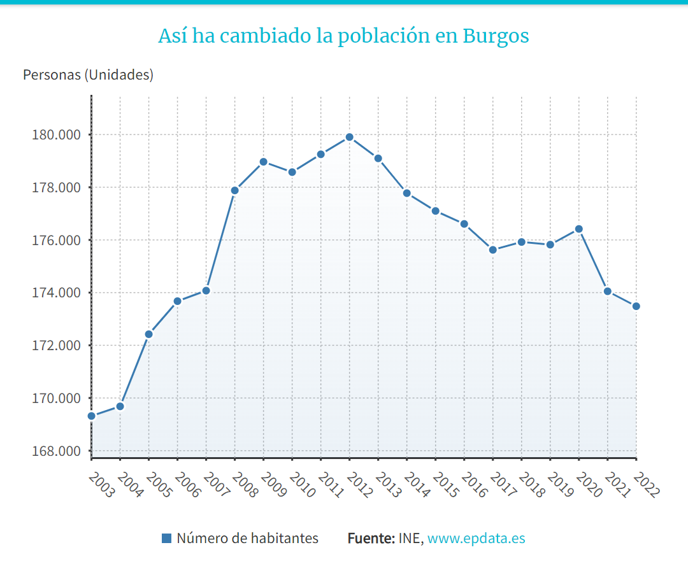
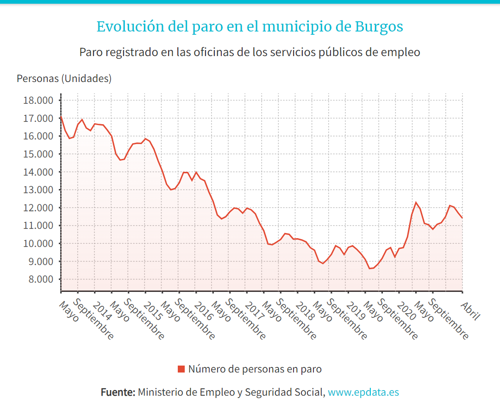
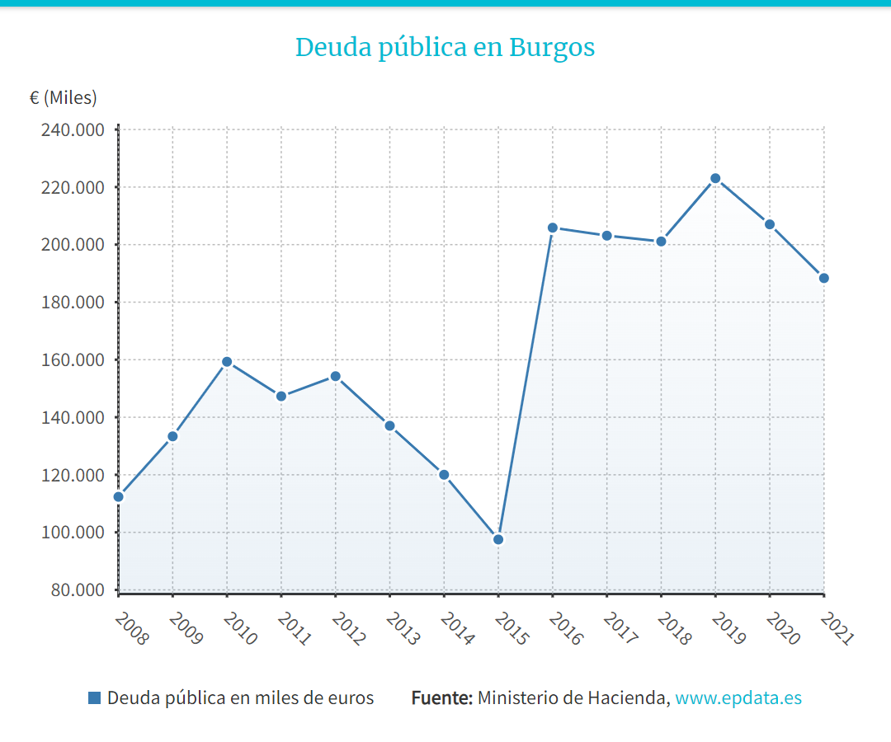
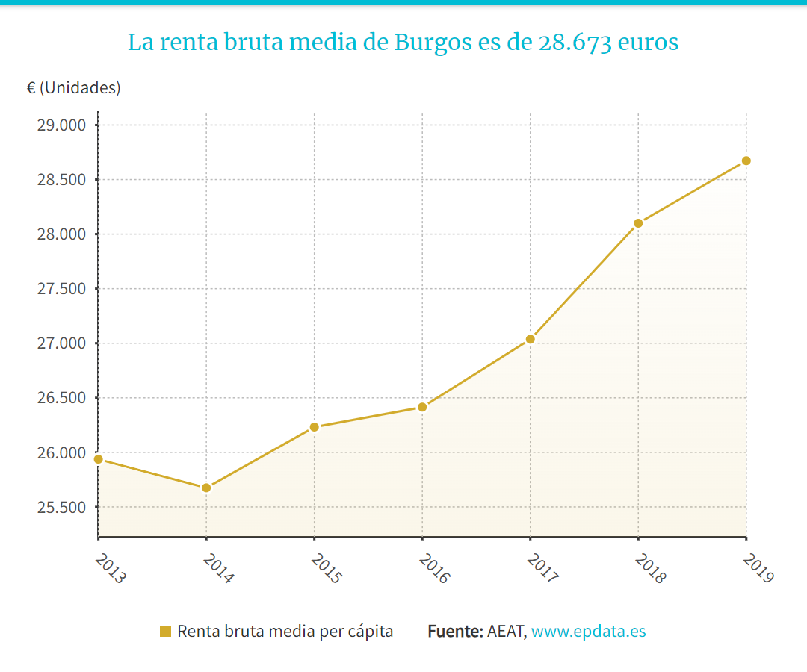
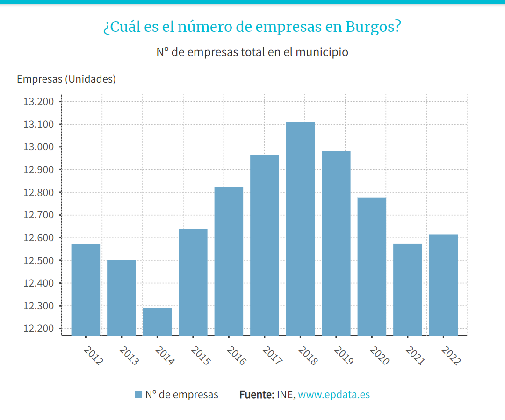
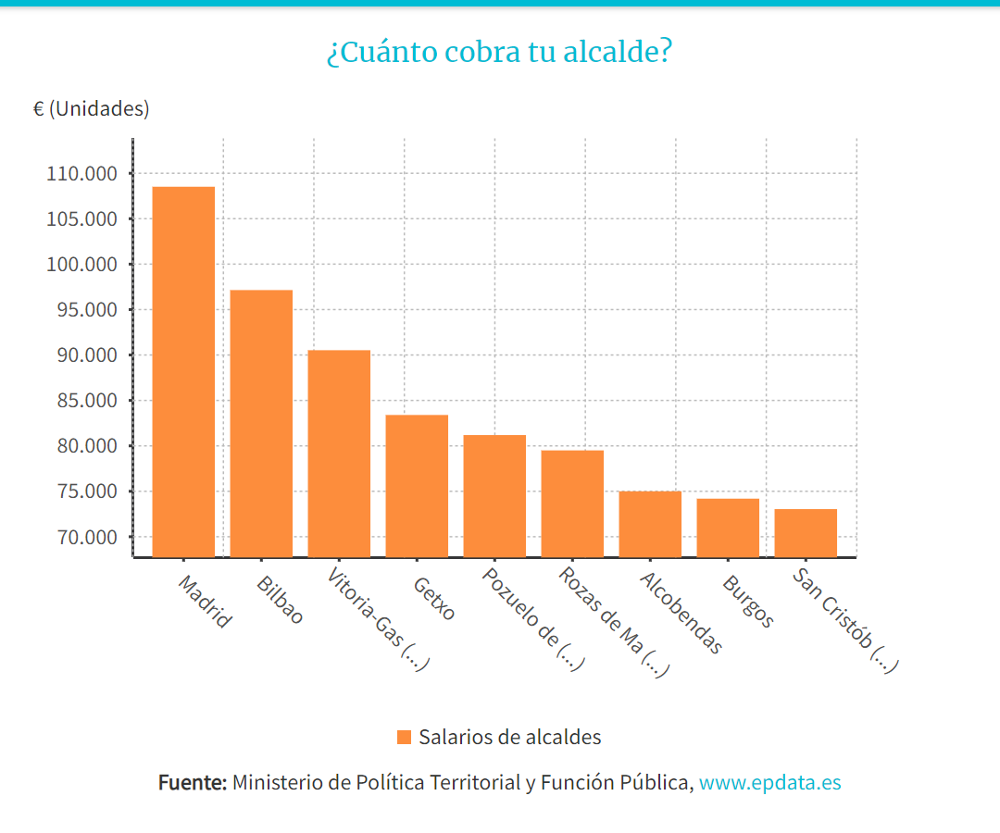
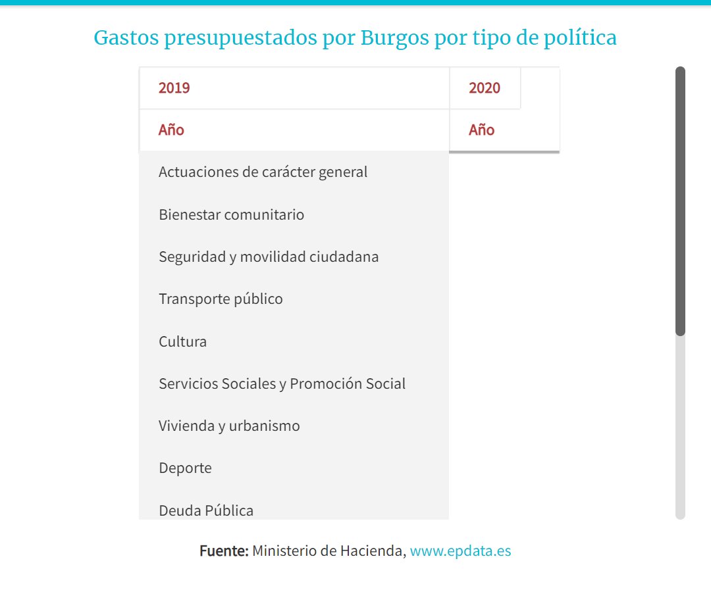
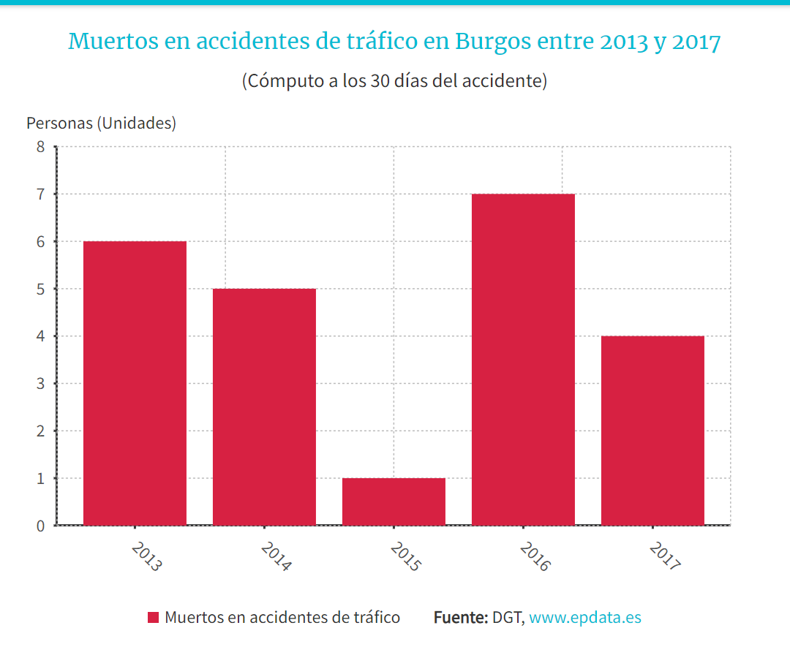
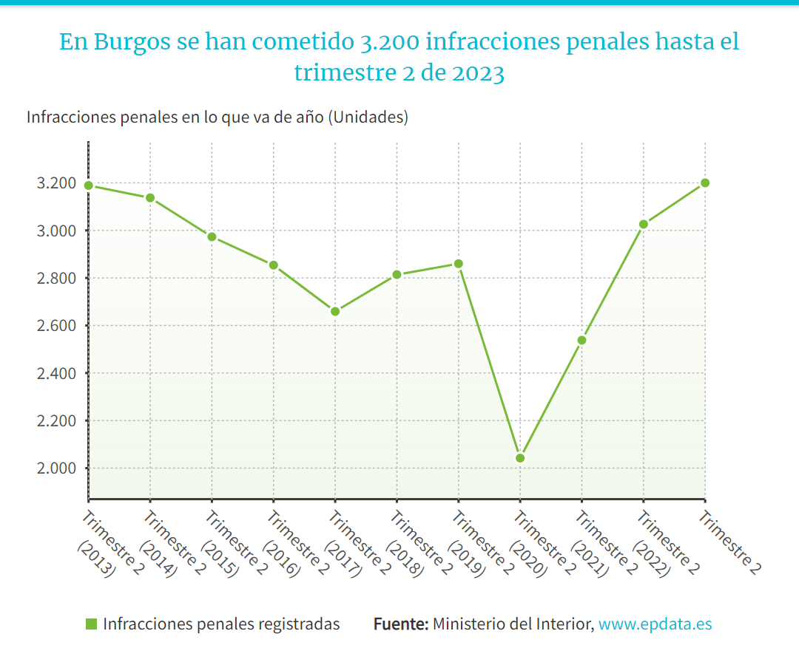
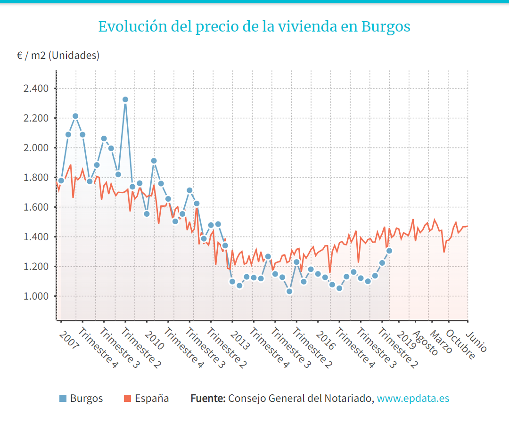

KAPA
Enrique Padilla
Alicia García
Rafael Treceño
Adrian Caballero
Así ha cambiado la población en Burgos
Fuente

Evolución del paro en el municipio de Burgos
Fuente

Deuda pública en Burgos
Fuente

La renta bruta media de Burgos es de 28.673 euros
Fuente

¿Cuál es el número de empresas en Burgos_
Fuente

¿Cuánto cobra tu alcalde_
Fuente

Gastos presupuestados por Burgos por tipo de política
Fuente

Muertos en accidentes de tráfico en Burgos entre 2013 y 2017
Fuente

En Burgos se han cometido 3.200 infracciones penales hasta el trimestre 2 de 2023
Fuente

Evolución del precio de la vivienda en Burgos
Fuente
